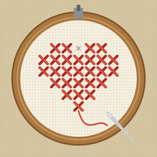

理由が分かるお絵かきロジック
つまったら、決まる1列と理由が図で出る。iPhone と iPad のアプリです。
縦と横の数字を手がかりにマスをぬって、絵を出すパズル（お絵かきロジック・ノノグラム）です。つまったときに「ヒント」を押すと、答えのマスを開けるのではなく、いまの盤から1列だけ見て決まるマスがある列を光らせ、なぜ決まるのかを図と文で見せます。
- 理由が分かるヒント：左に寄せた並べ方と右に寄せた並べ方の重なり・数字がちょうど埋まる列・どの塊も届かないマスなどを、列の図で見せます。ヒントは何回でも使え、広告を見る必要はありません
- 5×5（はじめて）10問・10×10 29問・15×15 27問の66問。どの問題も、1列ずつの理屈だけで（当て推量なしに）1通りに解けることを、計算で確かめてあります。数字は絵から計算しているので、数字のまちがいもありません
- 自分で絵を描いて問題にできます。描くたびに理屈だけで解けるかを調べ、決まらないマスを光らせます
- まちがえてもハートは減らず、ゲームオーバーもありません。× は自分で置いたときだけ入ります
- 刺しゅう枠とクロスステッチの見た目。解いた絵は、糸で刺した絵になって刺しゅう帳に並びます
- 登録・課金はありません。インターネットにつながっていなくても使えます。画面のいちばん下に小さな広告が出ます（画面いっぱいの広告・動画の広告は出ません）